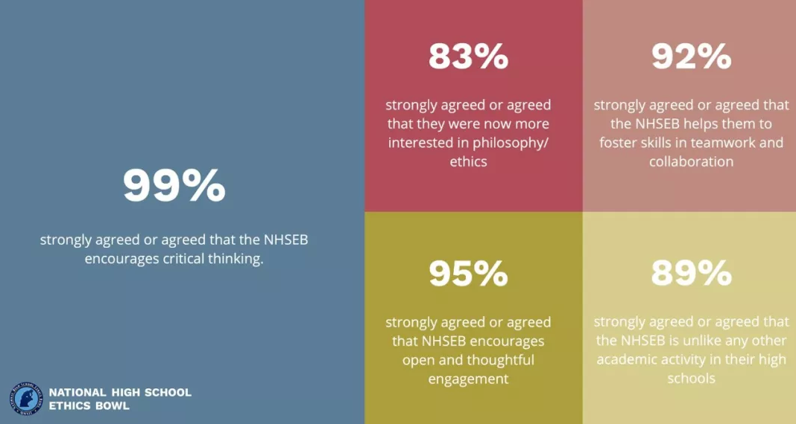
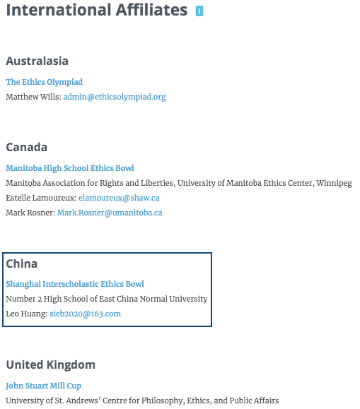

The Shanghai Interscholastic Ethics Bowl (SIEB) is a competitive yet collaborative event in which students engage in philosophical debates on real-life ethical dilemmas. It differs from a traditional debate in that the central goal of this competition is to demonstrate the breadth and depth of thinking, rather than to overwhelm or dominate the opposing team. The SIEB is more than teaching students how to analyze ethical cases: It is to teach them how to think and discuss these issues in a civic community, where they become fellow citizens of social responsibilities. Data shows that this event teaches and promotes ethical awareness, critical thinking, civil discourse, civic engagement, and an appreciation for multiple points of view.
As the first Ethics Bowl in China, the SIEB is modeled after the National High School Ethics Bowl (NHSEB) in the United States, hosted by the University of North Carolina at Chapel Hill. We are thankful for the generous support from director Alex Richardson and the NHSEB staff! You will definitely have a rich experience in our Ethics Bowl, just as the ones in the States!
Ethics Courses
New to Ethics Bowl? Don't worry! Every team participating in the SIEB will join intensive online courses. We will discuss moral theories, ethical case analysis, and some tips and tricks in the Ethics Bowl. There will also be adequate materials for students to get fully prepared.
Conversations
Philosophy enthusiasts, debate champions, curious thinkers... No matter who you are, you are bound to find someone who shares your passions and interests in the Ethics Bowl!
Judges
Our judges are graduates of top universities in the US. They majored in different fields, which provides very diverse backgrounds for ethical discussions. There will be three judges in every single match to ensure its fairness and quality.
Benefits of the Ethics Bowl
Critical thinking, interest in philosophy / ethics, open and thoughtful engagement, teamwork and collaboration...

(From the National High School Ethics Bowl)
We are the International Affiliate of the National High School Ethics Bowl!
(The only non-English-speaking country in the affiliates!)

A public benefit event
Everything including the online courses, materials, and participation in the event is totally free! (Except for event-day meals)